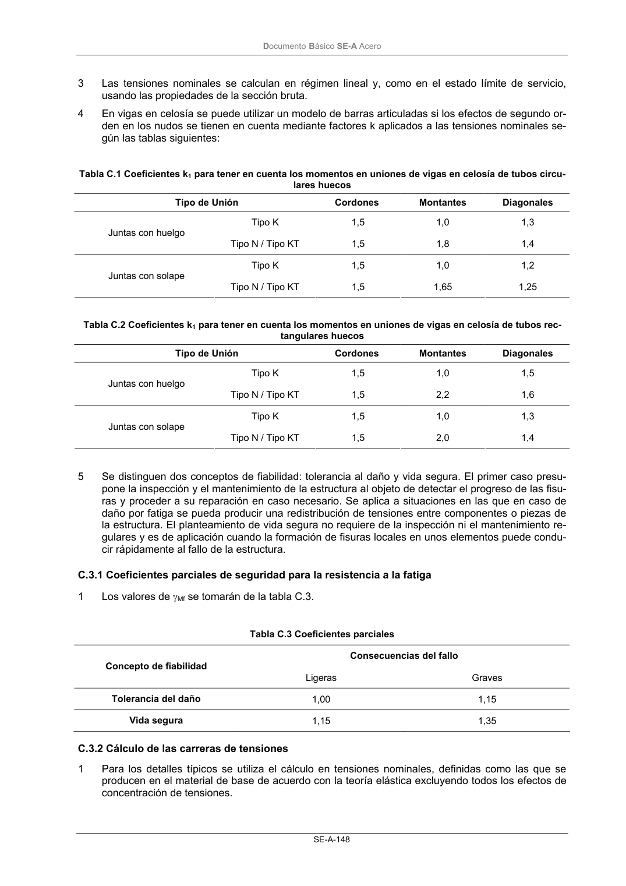
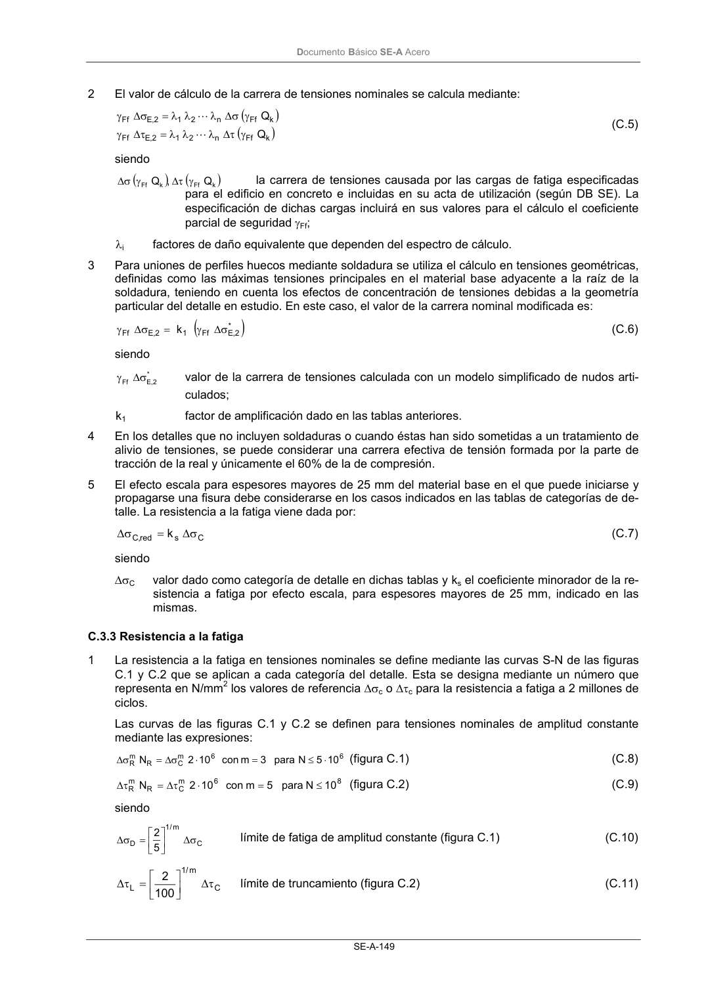

DB-SE-A Acero · edición 2007-10-23 · capa oficial
Documento DB-SE-A-oficial · SHA-256 del PDF 9ed9ea694aabfbda3bfbbef40dfe9223fde05d13c35bc2ba9751e5a96a22a64f
Copia fiel del PDF fuente · Fuente oficial
Ficha de la disposición en la fuente oficial
Formatos: JSON del segmento · Markdown
C.3 Comprobación de la fatiga 1 Debe comprobarse que, para la carga de fatiga: 1 / Mf C 2 , E Ff ≤ γ σ ∆ σ ∆ γ (C.1) 1 / Mf C 2 , E Ff ≤ γ τ ∆ τ ∆ γ (C.2) y, en caso de tensiones combinadas: 3 Mf C 2 , E Ff / γ σ ∆ σ ∆ γ + 1 / 5 Mf C 2 , E Ff ≤ γ τ ∆ τ ∆ γ (C.3) 2 Las carreras de tensión debidas a las cargas frecuentes ψl Qk se limitan a: 3 f 5,1 f 5,1 y y ≤ τ ∆ ≤ σ ∆ (C.4) DocumentoBásico SE-A Acero SE-A-148 3 Las tensiones nominales se calculan en régimen lineal y, como en el estado límite de servicio, usando las propiedades de la sección bruta. 4 En vigas en celosía se puede utilizar un modelo de barras articuladas si los efectos de segundo or- den en los nudos se tienen en cuenta mediante factores k aplicados a las tensiones nominales se- gún las tablas siguientes: Tabla C.1 Coeficientes k1 para tener en cuenta los momentos en uniones de vigas en celosía de tubos circu- lares huecos Tipo de Unión Cordones Montantes Diagonales Tipo K 1,5 1,0 1,3 Juntas con huelgo Tipo N / Tipo KT 1,5 1,8 1,4 Tipo K 1,5 1,0 1,2 Juntas con solape Tipo N / Tipo KT 1,5 1,65 1,25 Tabla C.2 Coeficientes k1 para tener en cuenta los momentos en uniones de vigas en celosía de tubos rec- tangulares huecos Tipo de Unión Cordones Montantes Diagonales Tipo K 1,5 1,0 1,5 Juntas con huelgo Tipo N / Tipo KT 1,5 2,2 1,6 Tipo K 1,5 1,0 1,3 Juntas con solape Tipo N / Tipo KT 1,5 2,0 1,4 5 Se distinguen dos conceptos de fiabilidad: tolerancia al daño y vida segura. El primer caso presu- pone la inspección y el mantenimiento de la estructura al objeto de detectar el progreso de las fisu- ras y proceder a su reparación en caso necesario. Se aplica a situaciones en las que en caso de daño por fatiga se pueda producir una redistribución de tensiones entre componentes o piezas de la estructura. El planteamiento de vida segura no requiere de la inspección ni el mantenimiento re- gulares y es de aplicación cuando la formación de fisuras locales en unos elementos puede condu- cir rápidamente al fallo de la estructura. C.3.1 Coeficientes parciales de seguridad para la resistencia a la fatiga 1 Los valores de γMf se tomarán de la tabla C.3. Tabla C.3 Coeficientes parciales Consecuencias del fallo Concepto de fiabilidad Ligeras Graves Tolerancia del daño 1,00 1,15 Vida segura 1,15 1,35 C.3.2 Cálculo de las carreras de tensiones 1 Para los detalles típicos se utiliza el cálculo en tensiones nominales, definidas como las que se producen en el material de base de acuerdo con la teoría elástica excluyendo todos los efectos de concentración de tensiones. DocumentoBásico SE-A Acero SE-A-149 2 El valor de cálculo de la carrera de tensiones nominales se calcula mediante: ( ) ( ) k Ff n 2 1 2 , E Ff k Ff n 2 1 2 , E Ff Q Q γ τ ∆ λ λ λ = τ ∆ γ γ σ ∆ λ λ λ = σ ∆ γ L L (C.5) siendo ( ) ( ) k Ff k Ff Q , Q γ τ ∆ γ σ ∆ la carrera de tensiones causada por las cargas de fatiga especificadas para el edificio en concreto e incluidas en su acta de utilización (según DB SE). La especificación de dichas cargas incluirá en sus valores para el cálculo el coeficiente parcial de seguridad γFf; λi factores de daño equivalente que dependen del espectro de cálculo. 3 Para uniones de perfiles huecos mediante soldadura se utiliza el cálculo en tensiones geométricas, definidas como las máximas tensiones principales en el material base adyacente a la raíz de la soldadura, teniendo en cuenta los efectos de concentración de tensiones debidas a la geometría particular del detalle en estudio. En este caso, el valor de la carrera nominal modificada es:

